The happy hub of our vineyard
A relaxing space
We'd love to welcome you to relax and enjoy the incredible atmosphere in our cafe. We believe that connecting with nature is the best way to find your zen and our cafe decor reflects this. Feel grounded while enjoying a coffee overlooking the vines or get that happy buzz from a delicious glass of wine and a moment shared with friends in our cosy bar area. We also welcome the remote workers to pull up a seat in the 'quiet room' which is designed to be a tranquil home away from home.
Breakfast
The cafe is open every day for breakfast or brunch (yep, we've got your back, night owls). So join us for a hearty or healthy plate of goodness, all sourced from local farms and producers. Check out our opening times or book to avoid disappointment.
Lunch
We pride ourselves on healthy, highly nutritious bowls with unforgetable flavours, but we do also serve alot of the classics. Our menu changes by the season so you'll get to try something new every time you stop by.
Coffee and cake
Don't have time for a long visit?... or just love cake as much as we do? That's great! We serve freshly bakes cakes every day, made at a local bakery. It's not only the cakes that are beautifully fresh in our cafe; our coffee is always freshly ground and sustainably sourced. We currently get our coffee beans from a small Cardiff-based company who live, sleep, breathe and of course drink coffee!
Events
Scroll through our gallery below to see some of the events we've held in our cafe. We have weekly events that are just so fun we can't help but bring them back each week, and some special one-off events that you don't want to miss. Our cafe is open exclusievly for these events so our usual food and drinks menu won't be available.
A taste of our cafe...
 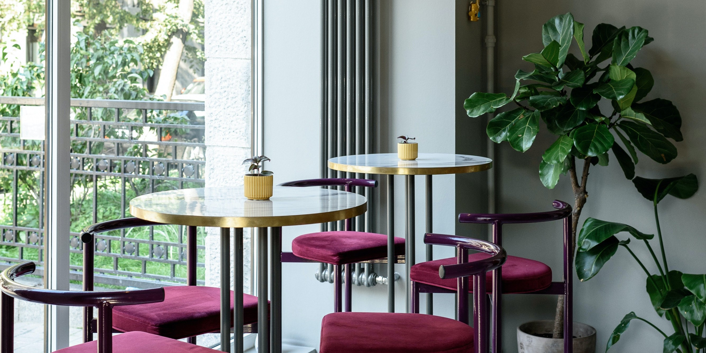
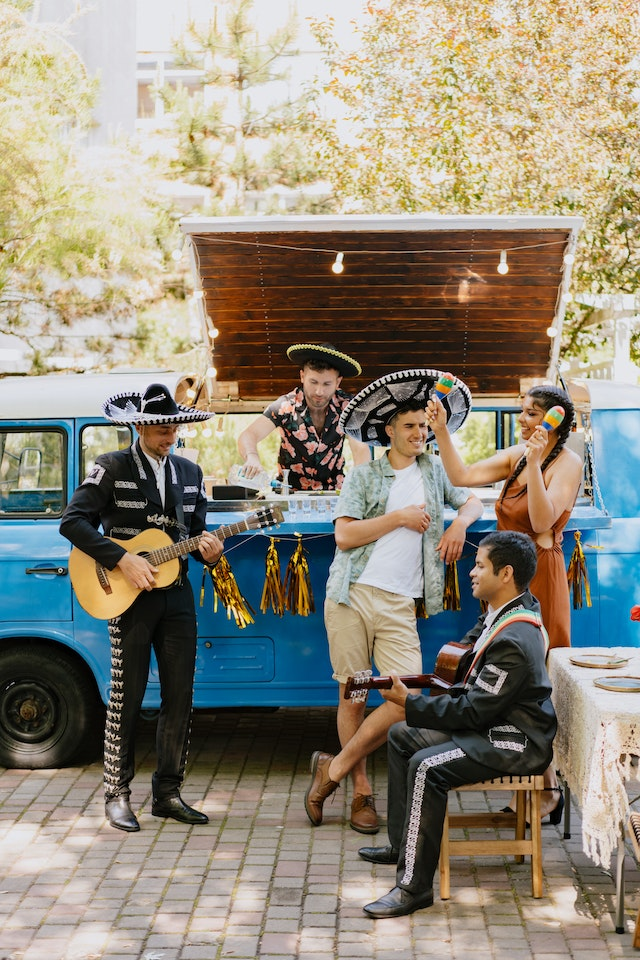
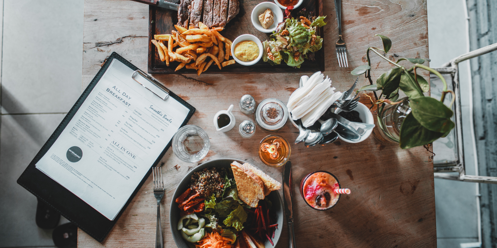
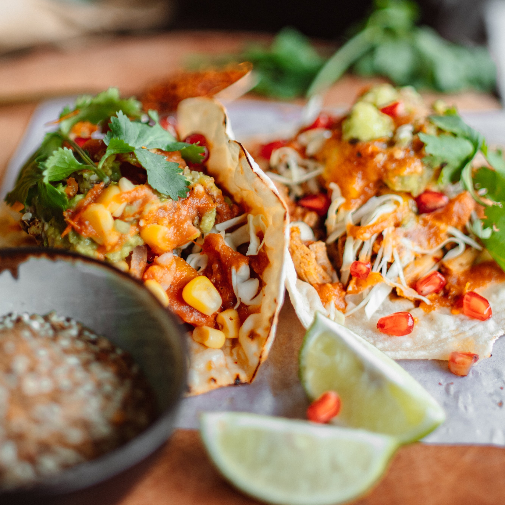
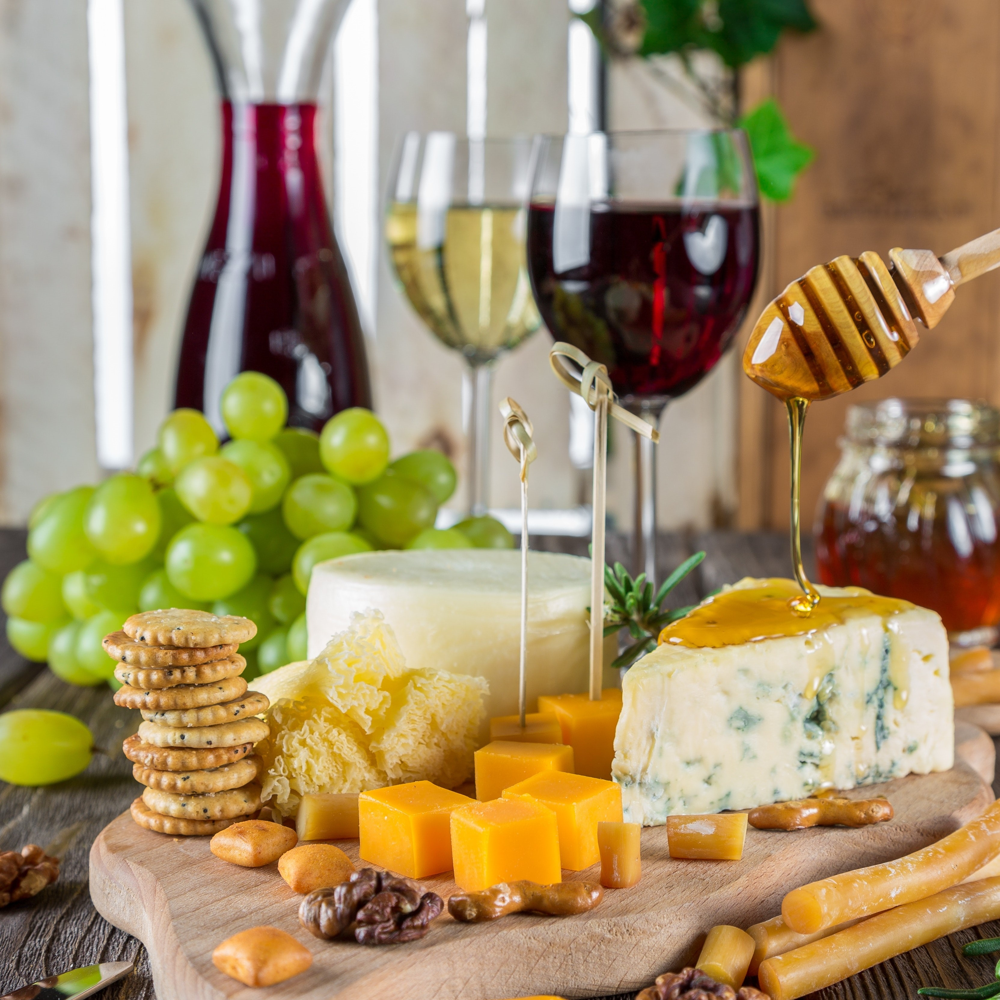
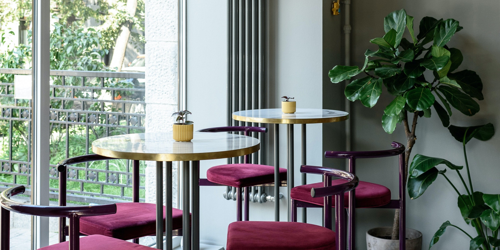
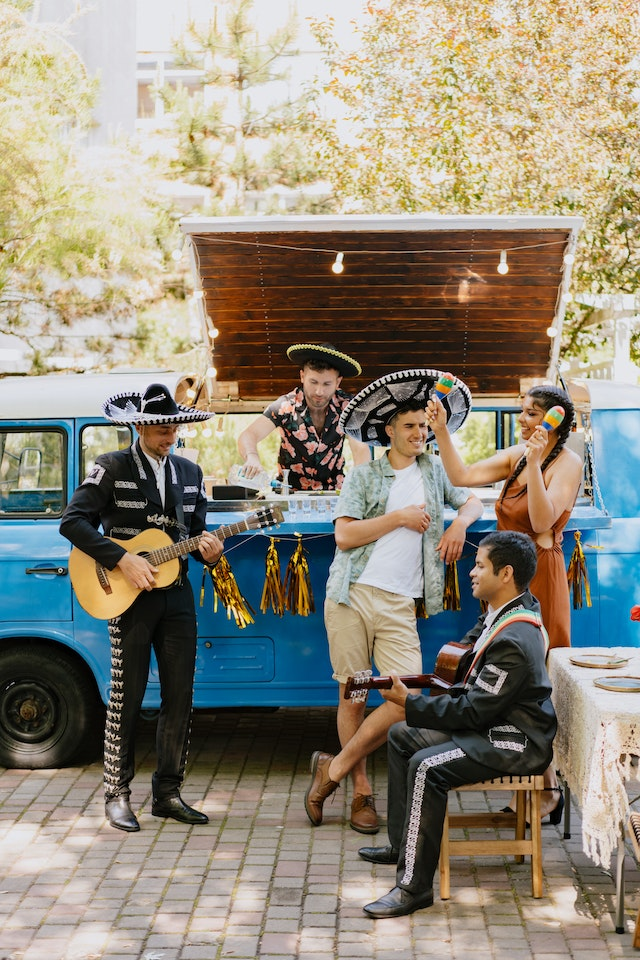
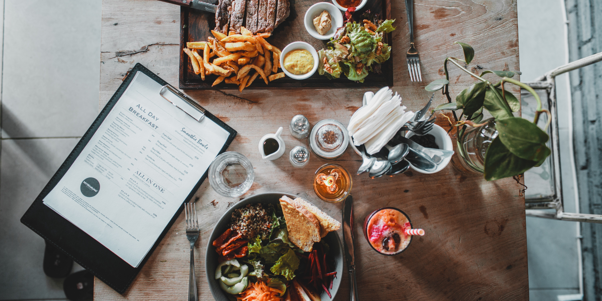
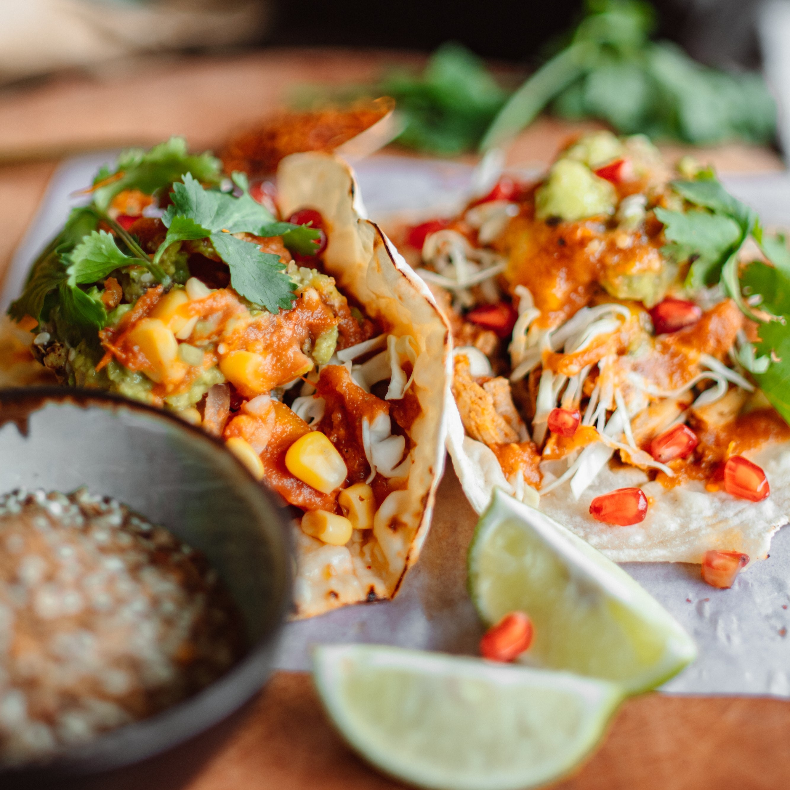
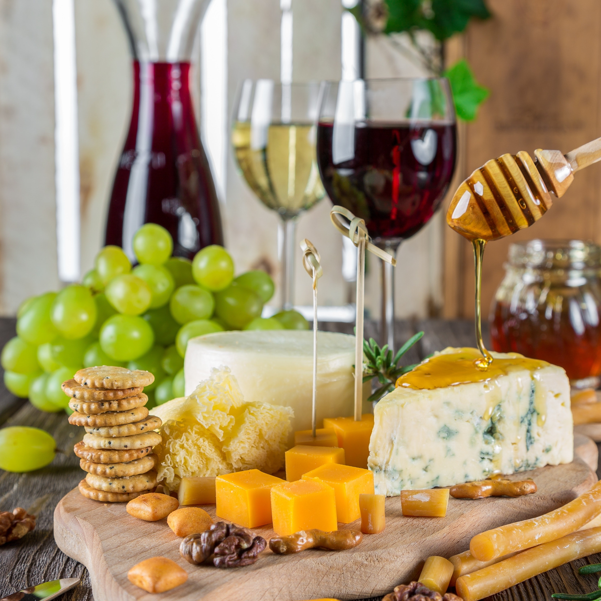
 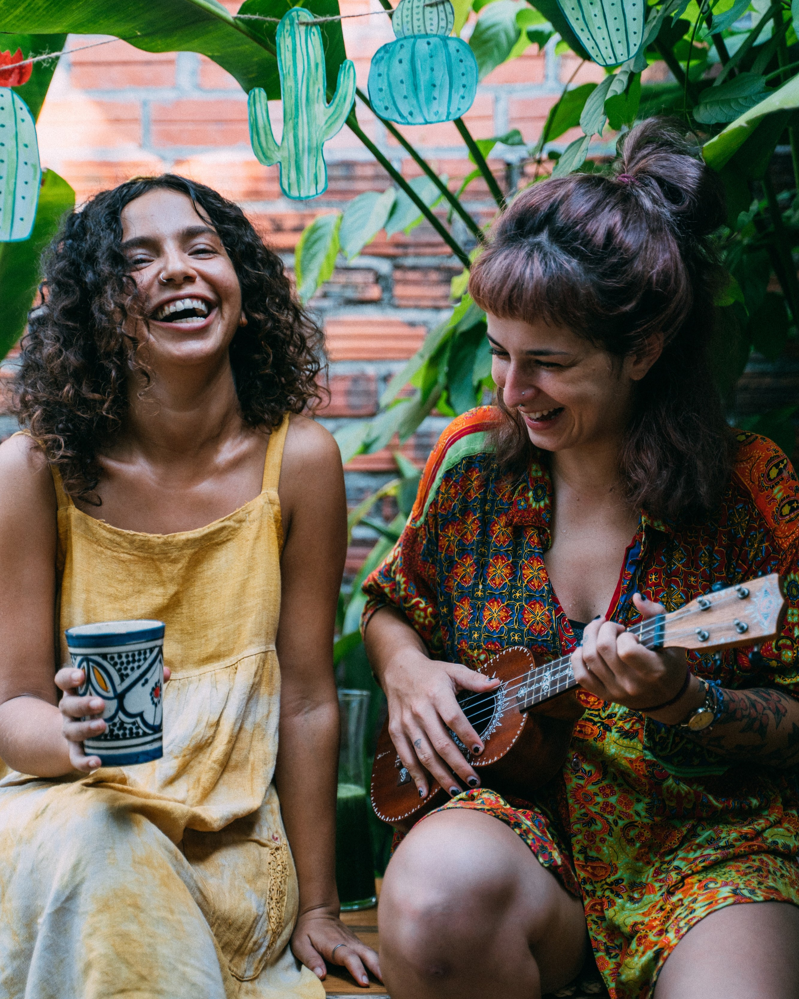
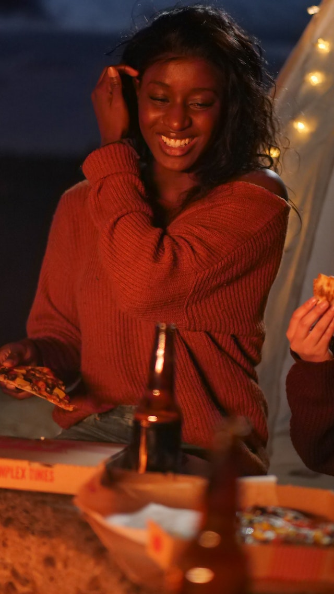
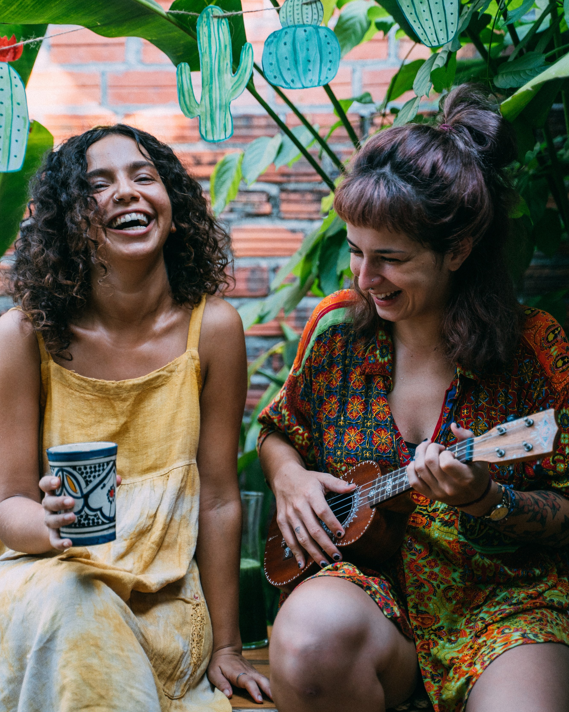
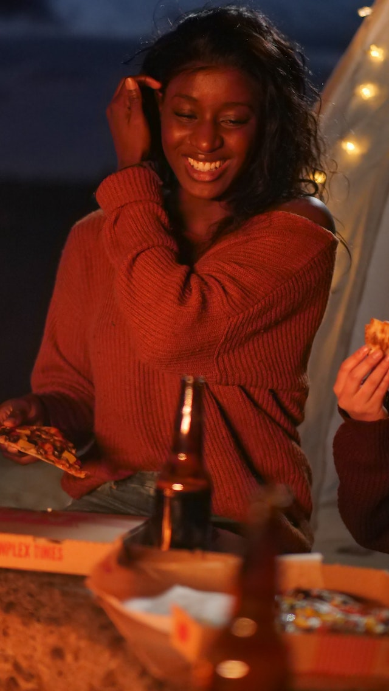